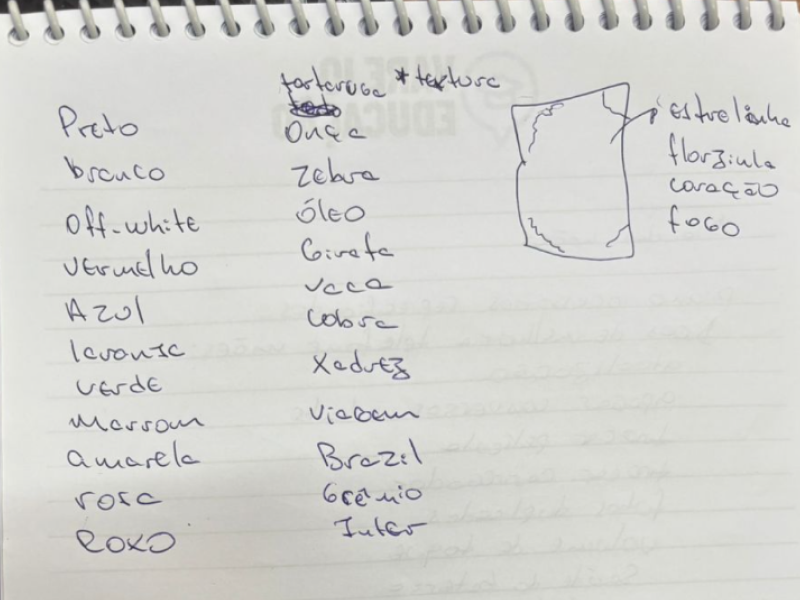
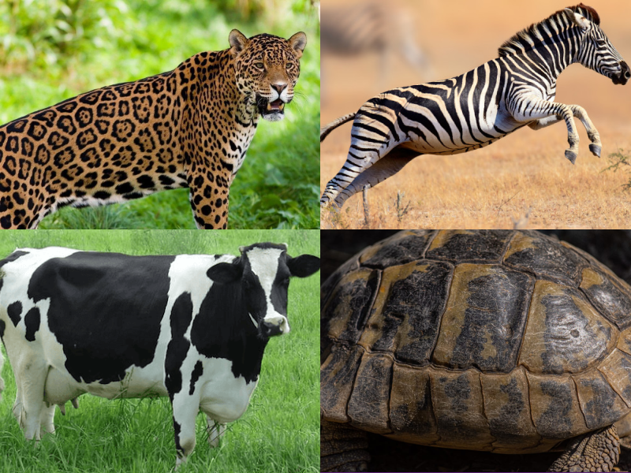
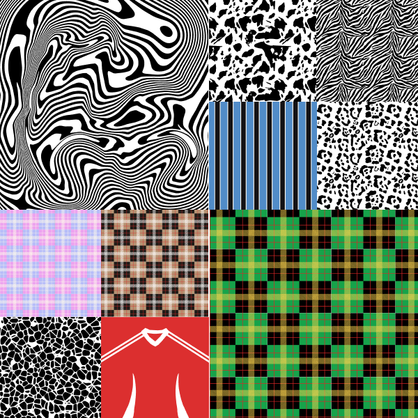
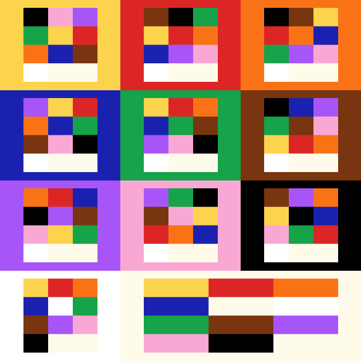
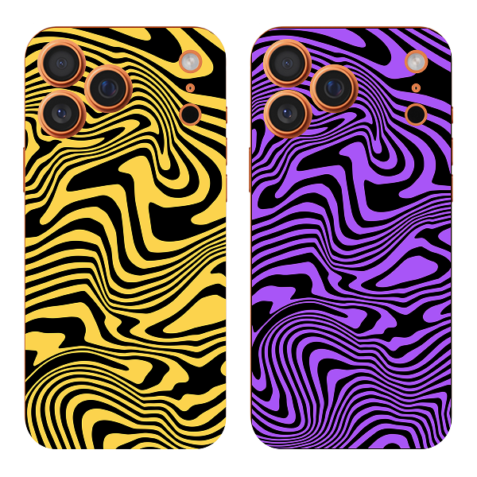

Case · Design Gráfico · Mobifans
Estampas
MobiStudio.

01 — Contexto / Problema
ferramenta · catálogo · variedadeO MobiStudio — personalizador de capinhas da Mobifans — precisava de um catálogo de artes prontas para complementar a ferramenta. As estampas precisavam ser vetoriais (SVG) para suportar colorização dinâmica via código, funcionar em qualquer escala e manter qualidade na impressão física.
O desafio era criar +10 artes únicas que fossem visualmente diversas entre si — sem repetir conceitos — mas que compartilhassem consistência técnica suficiente para funcionar corretamente com o motor de colorização SVG da ferramenta.
Contexto
Catálogo de estampas para o MobiStudio — ferramenta interna da Mobifans para personalização de capinhas. As artes precisavam ser vetoriais e compatíveis com colorização dinâmica por CSS/JS.
Problema central
Criar artes únicas com personalidade própria que ainda seguissem um padrão técnico rígido (SVG com paths coloríveis e fundo separado).
Oportunidade
Ampliar o valor percebido da ferramenta com um catálogo rico — 11 cores × +10 artes = mais de 110 combinações disponíveis ao cliente.
02 — Meu Papel
ilustração · spec técnica · testeCriação de Arte
Pesquisa de referências, rascunho à mão e digitalização de +10 artes únicas no Illustrator — cada uma com conceito e estilo próprios.
Direção Visual
Definição da paleta de 11 cores e curadoria de quais combinações de arte + cor funcionavam melhor visual e tecnicamente para a ferramenta.
Spec SVG
Exportação e estruturação dos SVGs conforme a spec técnica do MobiStudio — paths com fill correto, fundo separado — e teste de aplicação nas capas.
03 — Processo & Solução
pesquisa · desenho · exportação SVG
Passo 01 · Seleção
Passo 02 · Pesquisa e ReferênciasO processo começou com uma curadoria ampla de referências — streetwear, grafismo, cultura pop — para garantir que o catálogo tivesse variedade real. Cada arte passou por rascunho antes de ir para o Illustrator, mantendo a linha orgânica do traço mesmo no vetor final.
A restrição técnica mais importante: cada SVG precisava ter exatamente dois elementos de cor separados (fundo e arte), para que o motor de colorização do MobiStudio pudesse pintar ambos independentemente. Isso exigiu uma estrutura específica no Illustrator durante a exportação.

DESENHOS · DIGITALIZADOS
PALETA · 11 CORES
TESTE · CAPA APLICADA04 — Resultado
catálogo · ao vivo · combinações+10
Artes únicas
11
Cores por arte
Mais de 110 combinações disponíveis no catálogo. As estampas foram integradas ao MobiStudio e estão em produção no personalizador, ampliando a oferta de capas personalizadas para os clientes da Mobifans. O padrão técnico SVG estabelecido durante este projeto tornou-se a referência para futuras adições ao catálogo.